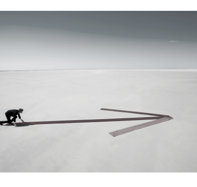

|  |
En nystart, för att hitta ditt fokus
|
Hur kan Mind on Point hjälpa dig att ta nästa steg?
Det kan vara svårt att komma igång med att börja rensa bland inarbetade vanor. Vi människor är ofta vår egna värsta fiende, som skapar ursäkter för att slippa göra en förändring, eller tänker nedsättande saker om oss själva. Bland kan vi behöva få lite stöd från någon som inte bor i vårt huvud. Någon som kan se vårt problem med andra glasögon eller som själv upplevt det som du upplver nu.
Det är då Mind On Point kommer in i bilden. För tro det eller ej, ibland kan det hjälpa att bara skriva en liten rad till någon, för att få klarhet i vad ens nästa steg är eller vad som hindrar en från att komma igång.
Mind on Point är ett studieprojekt och tar inte betalt för att svara på dina frågor eller ge dig tips och råd. Nedan hittar du vår mailadress eller så kan du gå direkt till vår kontaktsida, för att skicka iväg din fundering.